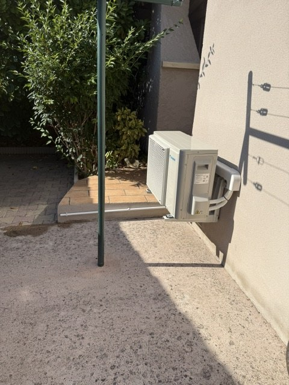
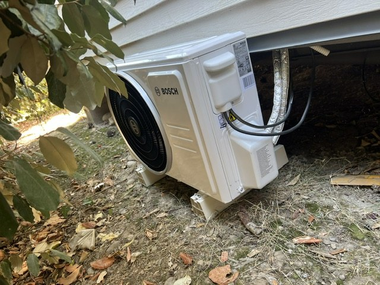

Les demandes les plus fréquentes dans le secteur
Les villas de plain-pied
Séjour d'un côté, chambres de l'autre : un seul groupe extérieur et deux ou trois unités intérieures suffisent souvent à équiper toute la maison, sans multiplier les appareils sur la façade.
Chauffer moins cher l'hiver
Dans les maisons chauffées aux convecteurs électriques, une clim réversible dans les pièces de vie prend le relais l'hiver et rafraîchit l'été. On regarde ensemble quelles pièces équiper en premier.
Commerces et bureaux en ville
Une boutique, un cabinet ou un bureau à Châteaurenard ne se climatisent pas comme une chambre : porte souvent ouverte, du monde, des appareils qui chauffent. La puissance se calcule sur l'usage réel.
Dans la plaine, pensez au vent et au soleil
Entre vergers et serres, beaucoup de maisons sont dégagées et prennent le mistral de plein fouet. Un groupe extérieur abrité du vent du nord chauffe mieux l'hiver et s'use moins. À l'inverse, une façade plein sud sans ombre fait travailler l'appareil l'été : on cherche le meilleur compromis pendant la visite.
En lotissement, le règlement peut imposer un emplacement ou un cache pour le groupe. Mieux vaut le relire avant la visite, on vous dit quoi chercher.
Un prix pour votre maison
Le prix dépend du nombre de pièces, de la puissance et de la pose. Il vous est donné par écrit après la visite, sans engagement.
Chantiers dans le secteur


Communes de ce secteur
- Châteaurenard
- Noves
- Cabannes
- Saint-Andiol
- Mollégès
- Eyragues
- Maillane
- Graveson
Vous êtes à Châteaurenard ou à côté ?
Appelez, ou laissez votre numéro pour être rappelé.